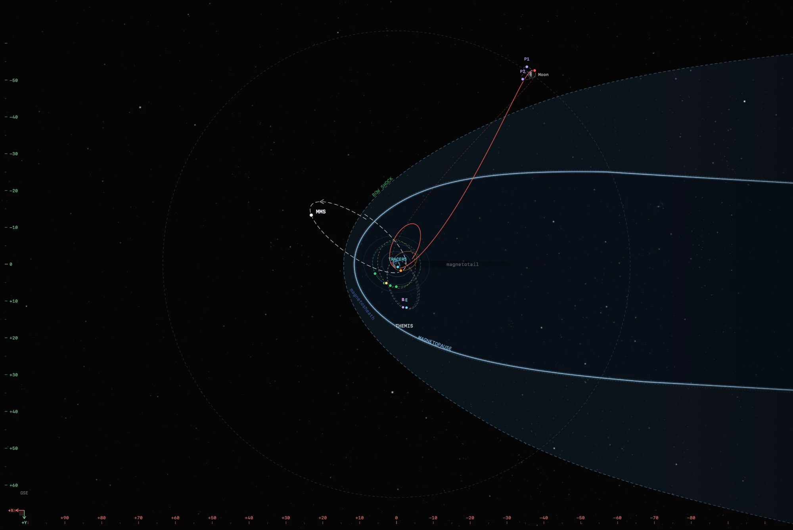

A nine-day voyage
Orion's journey comes from JPL Horizons, then Helios turns its coordinates into GSE and draws it on the Moon and magnetosphere views.
- Launch
- Translunar injection
- Lunar flyby, 8,282 km from the Moon's center
- Farthest from Earth, 413,146 km
- Entry interface

Monitor the near-Earth environment
Scrub Helios's time machine through the flight and the rest of Helios moves with it, showing the spacecraft and observations that matter for exploration beyond low Earth orbit.
Out through the belts
Turn on AE-8/AP-8 or CRRES and watch Orion's path cross the Van Allen belts on the way out and again on the way home.
The solar wind at L1
ACE, Wind, DSCOVR and SOLAR-1 show the solar wind before it arrives. OMNI gives the same wind shifted to Earth.
Kp, AE and SYM-H
Click Earth to watch the geomagnetic indices through the flight.
GOES protons and electrons
Integral protons from above 1 MeV to above 500 MeV, and electrons above 0.8, 2 and 4 MeV, beside GOES's magnetometer and X-ray data.
Wind, sheath or tail
The magnetopause and bow shock follow the solar wind minute by minute, so you can see where the Moon and Orion sit against them.
Out on the dawn flank
When Orion swung past, the Moon was on the dawn side, about 53 Earth radii from the Sun–Earth line and well clear of the magnetotail.
Trajectory: JPL Horizons, target −1024 (Artemis II, Orion “Integrity”), as Helios caches it. The Moon on this page comes from a low-precision lunar theory that puts the flyby within 150 km of Helios's distance. The magnetosphere is Shue et al. (1998) and Jelínek et al. (2012) for a typical solar wind (2 nPa, Bz = 0); the belts are drawn at their equatorial extent. Photographs: NASA Image and Video Library, each credited where it appears.